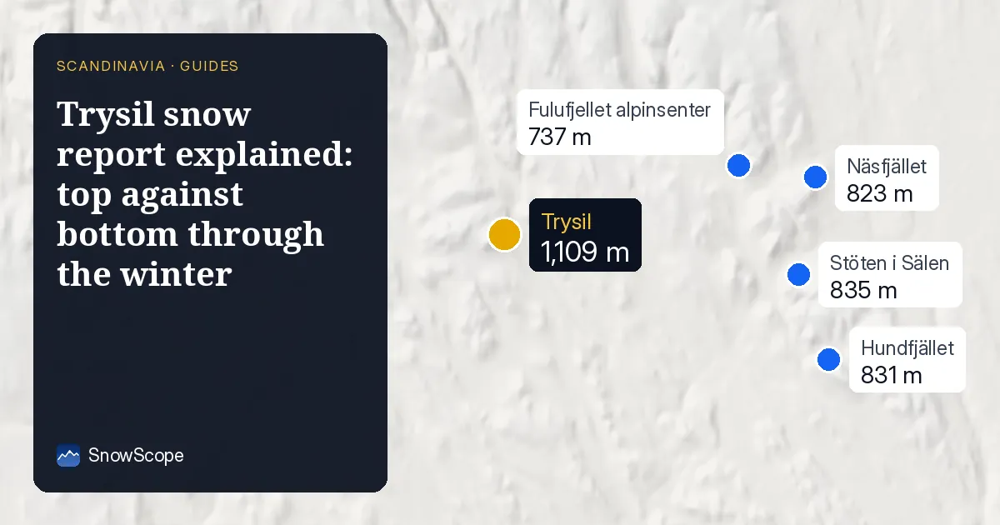
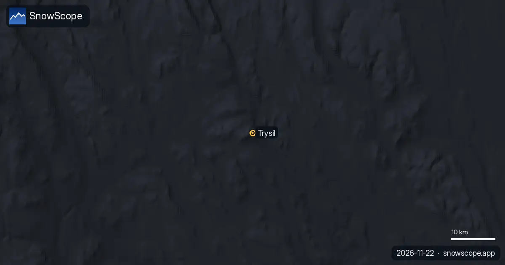

Trysil snow report explained: top against bottom through the winter
Trysil is Norway's largest ski resort by mapped runs, 101 km on 40 lifts around the rounded Trysilfjellet, from 407 m at the bottom to 1109 m at the top. Its snow report always carries two depths, and the gap between them is the key to reading it. Here is what the two numbers usually are, month by month, from our history of 46 past winters.
See the live snow forecast for Trysil in the SnowScope appSnow depth, powder alerts and the 3D map, free.

Two numbers, one mountain
The bottom and the top are separated by 702 m of height, and in a Scandinavian climate that is enough for a real difference. In a usual winter the peak depth is 80 cm at the base, 103 cm at mid-mountain (758 m) and 130 cm at the top. When the report says the bottom is thin, the upper half is usually fine; when the top is deep, the valley runs may still be mostly machine-made.
November and December: the top leads
The first snow reaches mid-mountain by October 20 in half of the past winters. November is thin everywhere: 7 cm at the base, 17 cm at mid-mountain and 26 cm at the top in a usual year.
December opens the gap: 28 cm below, 44 cm in the middle and 60 cm above. The cold inland air means what falls stays, and the resort's snowmaking fills in the lower runs, so December skiing is real but mostly on the upper and prepared pistes.
January to March: the whole mountain
By January the base has 52 cm, mid-mountain 68 cm and the top 88 cm. February and March are the deep months: 80 and 85 cm at mid-mountain, 99 and 107 cm at the top.
The best week at mid-mountain is ISO week 9, at the end of February, when every past winter (100 per cent) had at least 50 cm there. Mid-mountain holds 50 cm or more for 12 weeks in nine of ten winters; the top manages 15 weeks.
April: ski the top, walk the bottom
In April the base usually has 42 cm left and the top 111 cm. Easter weeks are a top-of-the-mountain affair; the valley runs depend on how much the groomers stacked up during winter.
Month by month at three heights
In December a usual winter has 28 cm at the base (407 m), 44 cm at mid-mountain (758 m) and 60 cm at the top (1109 m). In January a usual winter has 52 cm at the base (407 m), 68 cm at mid-mountain (758 m) and 88 cm at the top (1109 m). In February a usual winter has 65 cm at the base (407 m), 80 cm at mid-mountain (758 m) and 99 cm at the top (1109 m).
In March a usual winter has 66 cm at the base (407 m), 85 cm at mid-mountain (758 m) and 107 cm at the top (1109 m). In April a usual winter has 42 cm at the base (407 m), 78 cm at mid-mountain (758 m) and 111 cm at the top (1109 m).
A poor winter and a rich winter
The spread matters as much as the middle. At mid-mountain, nine of ten past Marchs had at least 63 cm and one in ten had 115 cm or more; at the top the same range runs from 76 to 137 cm.
Over the whole winter the peak at mid-mountain ran from 54 cm in the poorest past winter to 146 cm in the richest, around a usual 103 cm; at the top from 58 to 194 cm around 130 cm. Snow lay on the ground at mid-mountain for 200 days in a usual winter, and the first snow of the season settled there by October 20 in half of the winters. These are model values for the area over 46 past winters, not resort measurements; they describe what to expect, not what the groomers will add.
Trend over 46 winters
The top's winter peak moved from 145 cm in the first 15 winters of our record to 135 cm in the last 15. The base peak moved from 92 cm to 78 cm. The mountain still delivers, with a touch less at the bottom; last winter's mid-mountain peak was 93 cm.
Tips for skiers
- Read the top number for the skiing, the bottom number for the walk home.
- February and early March give the deepest snow at every height.
- Our depths are an area estimate from past winters, not the resort's own measurement; open lifts are on the official site.
- Swedish visitors: Trysil is close to the border, and the snow story is the same as on the Swedish side of the hills.
References and credits
- Wikipedia, 'Trysil (ski resort)', retrieved 22 November 2026. en.wikipedia.org/wiki/Trysil
About these numbers
Snow numbers: SnowScope snow history, 46 past winters (1980-81 to 2025-26) at three heights of the resort, a model of the past corrected for height (an estimate for an area, not resort reports). Lift, run and access facts: the sources listed below, checked on the date shown.
Official avalanche bulletins: Varsom (NVE)
Cite this report
For research, teaching or the press: the numbers and charts are free to reuse under CC BY 4.0 with this citation.
SnowScope (2026), Trysil snow report explained: top against bottom through the winter, https://snowscope.app/blog/en/2026/11/trysil-snow-top-vs-bottom-through-the-winter.html, accessed 2026-11-22
SnowScope (Atlas Labs). (2026, November 22). Trysil snow report explained: top against bottom through the winter. SnowScope snow reports. https://snowscope.app/blog/en/2026/11/trysil-snow-top-vs-bottom-through-the-winter.html
BibTeX
@misc{snowscope2026trysilsnowtopvsbottomthr,
author = {{SnowScope (Atlas Labs)}},
title = {Trysil snow report explained: top against bottom through the winter},
year = {2026},
month = nov,
howpublished = {\url{https://snowscope.app/blog/en/2026/11/trysil-snow-top-vs-bottom-through-the-winter.html}},
note = {Published 2026-11-22 11:12 UTC; accessed 2026-11-22}
}· CC BY 4.0 · Methods, data and tools →
Trysil: snow and temperature by height, this winter vs last (tools) →
Follow Trysil
Free: a message when fresh snow is coming, and the forecast every morning.
More snow reports

Pick a region, dates, budget and what matters; get every resort ranked with the likely snow at the start, the pass, hotel and food per person, chalets to book, and a game mode.

Austria's largest ski pass area month by month: usual snow depth at the base, mid-mountain and the top from 46 past winters, where the snow is safe in December and where it is thin, and the weeks that never fail.

The Mölltal glacier above Flattach: usual snow depth at the base, mid-mountain and the top from 46 past winters, from the first snow in September to the May skiing, and why the depth is a different world from the valley.